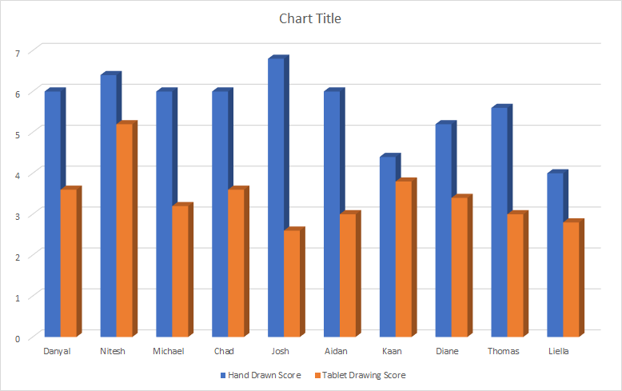

The Green bar represents the average of all results.
Our experiment shows that all participants were better with pen and paper compared to the drawing tablet, the scores of the tablet drawerings were noticeably lower than the scores of pen and paper drawings. During the experiment, most participants mentioned that they preferred using pen and paper compared to the tablet.
....
It is important to note the small sample size as it does not accurately represent how good people are at using a graphics tablet. None of our participants had prior experience with any graphic tablets. If this experiment was done a second time with participants that do have prior experience, this would give us more insight into the usability of graphics tablet.